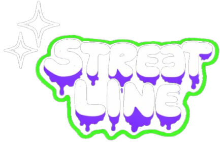
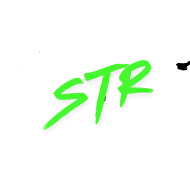

Estilo que conquista. Atitude que marca.


Estilo que conquista. Atitude que marca.
A StreetLine nasceu da paixão pela moda urbana e pela cultura de rua. Nossa missão é trazer estilo, autenticidade e atitude para quem vive a cidade, busca se expressar e se destacar com peças exclusivas e de qualidade.
Criada por apaixonados pelo streetwear, a StreetLine representa muito mais do que roupas. Representa um movimento, uma forma de se posicionar no mundo e mostrar sua essência. Aqui, cada peça conta uma história, e cada detalhe reflete nosso compromisso com quem vive o lifestyle urbano.